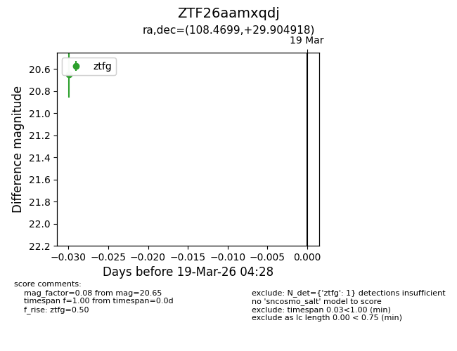
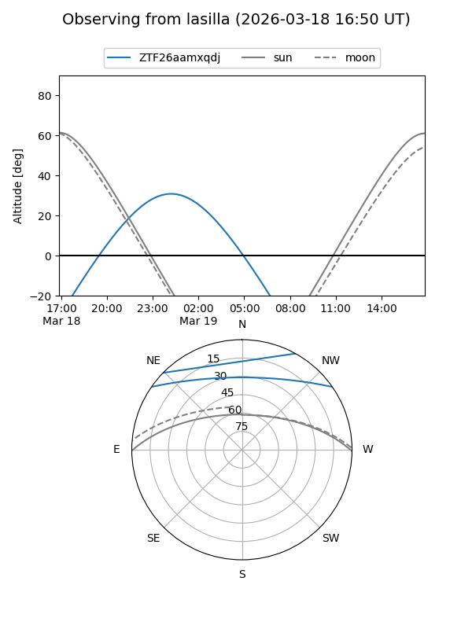
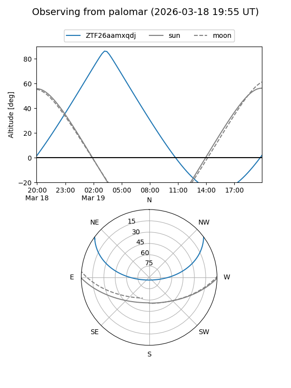

ZTF26aamxqdj
Target ZTF26aamxqdj at 2026-03-19 04:30
Aliases and brokers:
FINK: link
Lasair: link
ALeRCE: link
alt names
ZTF26aamxqdj (ztf,fink_ztf)
Coordinates:
equatorial (ra, dec) = 108.4699,+29.90492
equatorial (HMS+DMS) = 07:13:52.78,+29:54:17.70
galactic (l, b) = (187.7801,+17.62347)
Flags:
Photometry:
last ztfg=20.65
1 ztfg detections
Lightcurve

Visibility


Additional plots